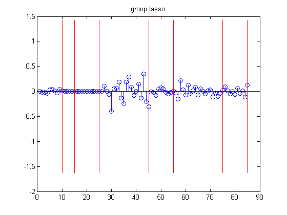
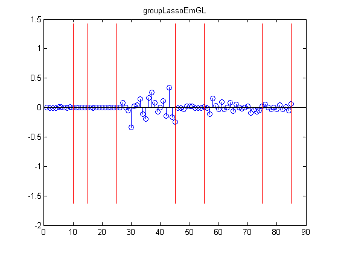
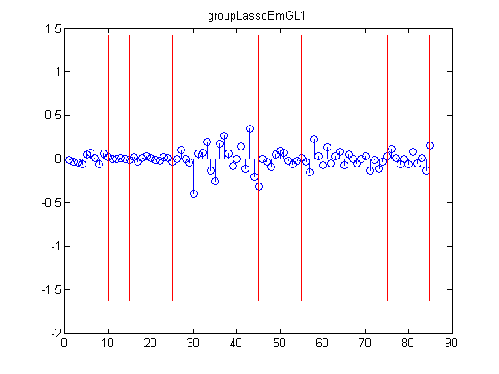
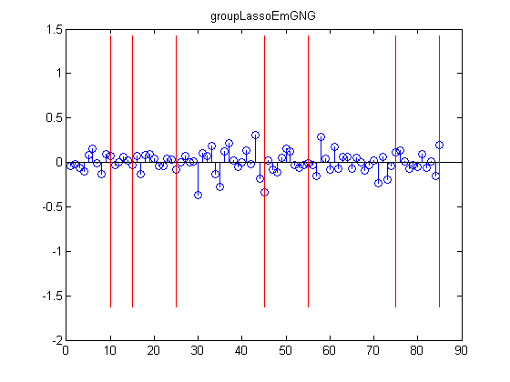
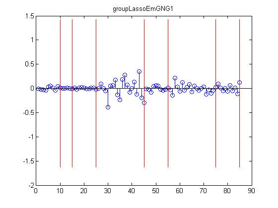

Compare group lasso solved using EM and projected gradients
Contents
% This file is from pmtk3.googlecode.com function linregGroupLassoEmDemo()
setSeed(1);
Make data
Generate categorical features
nInstances = 50; %nStates = [10 5 10 5 20 5 10 5 20 5 10 20 10]; nStates = [10 5 10 20 10 20 10]; % Number of discrete states for each categorical feature X = zeros(nInstances,length(nStates)); offset = 0; for i = 1:nInstances for s = 1:length(nStates) prob_s = rand(nStates(s),1); prob_s = prob_s/sum(prob_s); X(i,s) = sampleDiscrete(prob_s); end end % Now convert categorical matrix to binary (1ofK) encoding X_ind = dummyEncoding(X, nStates); % Now make sparse weight vector, where sparsity is in groups offset = 0; nVars = sum(nStates); wTrue = zeros(nVars, 1); for s = 1:length(nStates) wTrue(offset+1:offset+nStates(s),1) = (rand > .75)*randn(nStates(s),1); offset = offset+nStates(s); end % Make data y = X_ind*wTrue + 1*randn(nInstances,1); Xtrain = X_ind; ytrain = y; [Xtrain, mu, s] = standardizeCols(Xtrain); ytrain = centerCols(ytrain); if 0 Xtrain = X_ind(1:floor(nInstances/2),:); ytrain = y(1:floor(nInstances/2)); Xtest = X_ind(floor(nInstances/2)+1:end,:); ytest = y(floor(nInstances/2)+1:end); end
Set up groups
offset = 0; groups = zeros(nVars, 1); for s = 1:length(nStates) groups(offset+1:offset+nStates(s),1) = s; offset = offset+nStates(s); end lambdaL1 = 15; lambdaGL1 = lambdaL1;
Fit
if 0 wHatLasso = linregFitL1InteriorPoint(Xtrain, ytrain, lambdaL1); wHatLassoEmL = linregFitSparseEm(Xtrain, ytrain, 'laplace', 'lambda', lambdaL1); wHatLassoEmNG = linregFitSparseEm(Xtrain, ytrain, 'ng', 'shape', 1, 'scale', (0.5*lambdaL1)^2/2); end wHatGroup = linregFitGroupLasso(Xtrain, ytrain, groups, lambdaGL1); wHatGroupEmGL = linregFitSparseEm(Xtrain, ytrain, 'groupLasso', 'lambda', (lambdaGL1), 'groups', groups, 'verbose', true); wHatGroupEmGL1 = linregFitSparseEm(Xtrain, ytrain, 'glaplace', 'lambda', (lambdaGL1), 'groups', groups, 'verbose', true); wHatGroupEmGNG = linregFitSparseEm(Xtrain, ytrain, 'gng', 'lambda', (0.5*lambdaGL1), 'groups', groups, 'verbose', true); wHatGroupEmGNG1 = linregFitSparseEm(Xtrain, ytrain, 'gng1', 'lambda', (0.5*lambdaGL1), 'groups', groups, 'verbose', true);
initializing model for EM 1 loglik: -47.6763 2 loglik: -33.3165 3 loglik: -31.6704 4 loglik: -31.248 5 loglik: -31.1016 6 loglik: -31.0448 7 loglik: -31.0235 initializing model for EM 1 loglik: -47.6763 2 loglik: -37.4614 3 loglik: -36.0024 4 loglik: -35.6349 5 loglik: -35.5207 6 loglik: -35.4633 7 loglik: -35.4316 initializing model for EM 1 loglik: -231.687 2 loglik: -230.779 3 loglik: -230.776 initializing model for EM 1 loglik: -131.725 2 loglik: -115.253 3 loglik: -112.622 4 loglik: -111.973 5 loglik: -111.703 6 loglik: -111.55 7 loglik: -111.476
Plot
if 0 figure; stem(wHatLasso); title('lasso'); drawGroups(nStates, wTrue); printPmtkFigure('groupLasso-LassoIP') figure; stem(wHatLassoEmL); title('lassoEmL'); drawGroups(nStates, wTrue); printPmtkFigure('groupLasso-LassoEmL') figure; stem(wHatLassoEmNG); title('lassoEmNG'); drawGroups(nStates, wTrue); printPmtkFigure('groupLasso-LassoEmNG') end figure; stem(wHatGroup); title('group lasso'); drawGroups(nStates, wTrue); printPmtkFigure('groupLasso-GroupProj') figure; stem(wHatGroupEmGL); title('groupLassoEmGL'); drawGroups(nStates, wTrue); printPmtkFigure('groupLasso-GroupEmGL') figure; stem(wHatGroupEmGL1); title('groupLassoEmGL1'); drawGroups(nStates, wTrue); printPmtkFigure('groupLasso-GroupEmGL1') figure; stem(wHatGroupEmGNG); title('groupLassoEmGNG'); drawGroups(nStates, wTrue); printPmtkFigure('groupLasso-GroupEmGNG') figure; stem(wHatGroupEmGNG1); title('groupLassoEmGNG1'); drawGroups(nStates, wTrue); printPmtkFigure('groupLasso-GroupEmGNG1') placeFigures    
end function drawGroups(nStates, wTrue) hold on for i=1:length(nStates) j = sum(nStates(1:i)); h=line([j j], [min(wTrue(:)) max(wTrue(:))]); set(h,'color','r','linewidth',1); end end